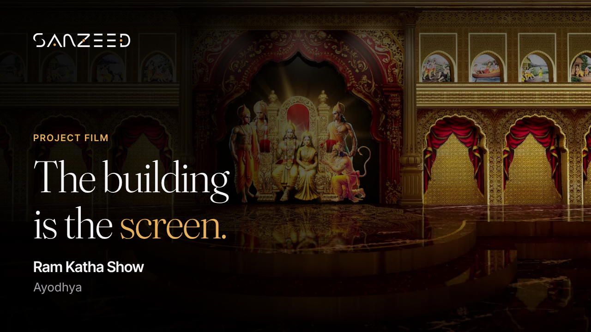
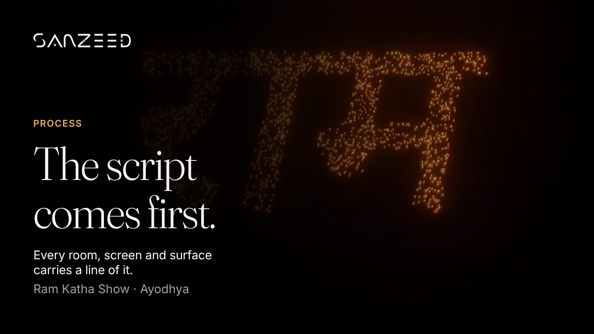
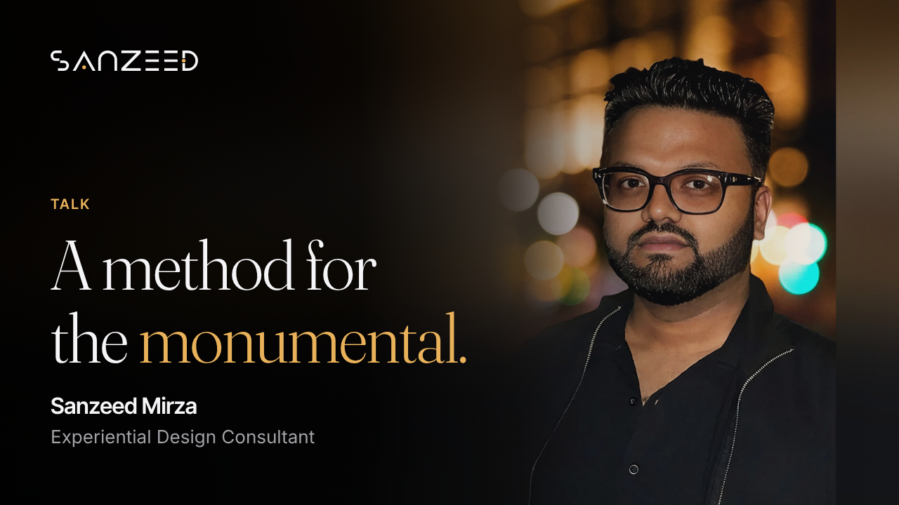

sanzeed.com · Experiential Design Consultant
Experiential design you can walk into. Museums, experience centres, pavilions and projection shows — directed by one person.

The building is the screen.Ram Katha Show · Ayodhya · project film
The script comes first.Process · every room, screen and surface carries a line of it
A method for the monumental.Talk · Sanzeed Mirza